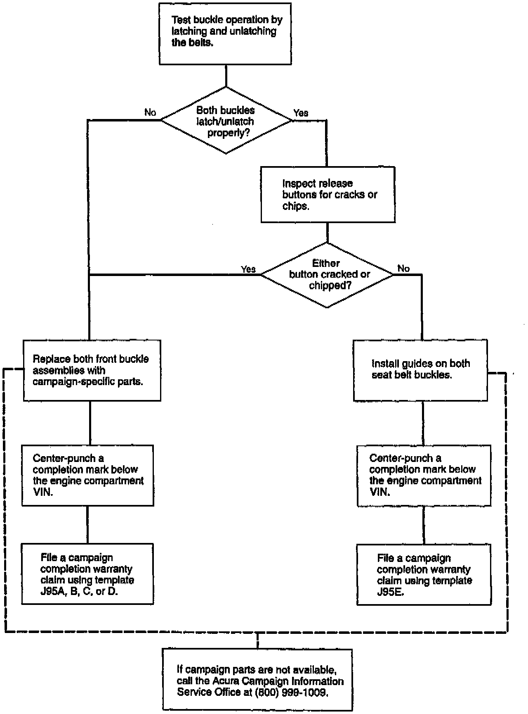

Customer Notification
Owners of affected vehicles will be contacted by mail. The owner will be asked to take the vehicle to a dealership for repair or updating. The text of the customer letter is at the end of this service bulletin.
Flow Chart